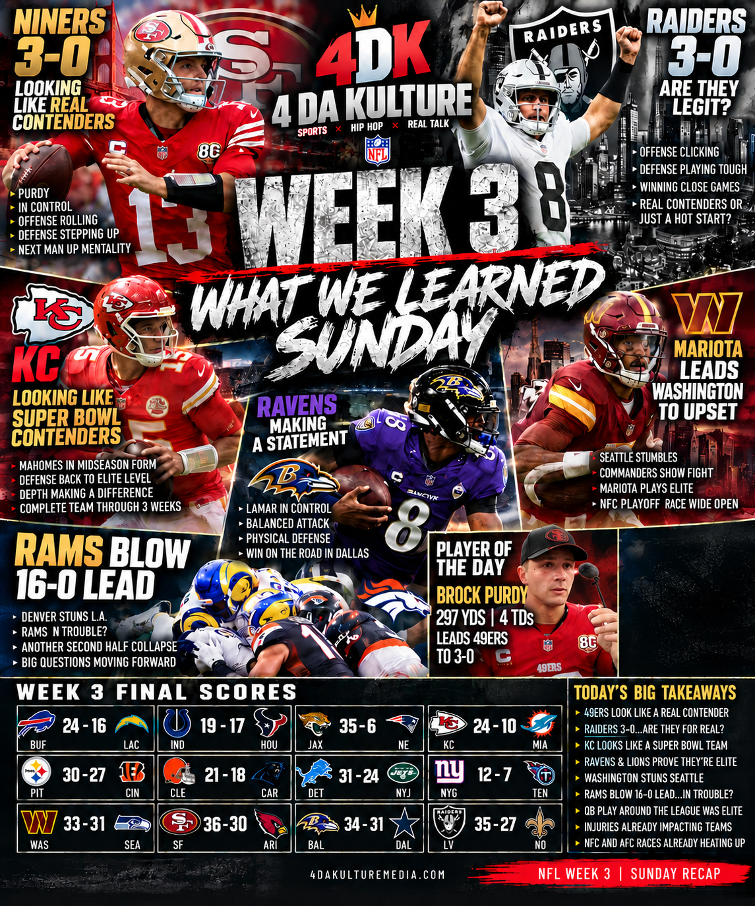

4DK NFL • WEEK 3 • SEPT. 24–28WEEK 3
WEEK 3
SUNDAY IS FINAL.
The full Sunday recap is live. Every game, the biggest takeaways, Player of the Day, Stock Up/Stock Down and the questions that carry us into Monday and Tuesday.
WHAT WE LEARNED SUNDAY.

FULL 4DK SUNDAY RECAP • 14 GAMESNINERS. CHIEFS. VEGAS. CHAOS.
San Francisco and Kansas City look like contenders. The Raiders are 3–0. Marcus Mariota and Washington stun Seattle. Denver erases a 16–0 halftime deficit and hands the Rams a brutal Sunday-night loss.
READ THE FULL WEEK 3 SUNDAY RECAP →5 MAJOR HEADLINES.
4DK NFL • IN-DEPTH WEEK 3 COLUMNWHO'S REAL? WHO'S UNDER PRESSURE?
The 49ers look Super Bowl-caliber. The Raiders get Kansas City as their measuring stick. Buffalo may finally be ready to break through. The Chargers and Texans need a win. And J.J. McCarthy gets an audition in New York.
READ ALL 5 MAJOR HEADLINES →THE BIG STAGES.
THE 4DK WEEKLY FLOW.
THURSDAYTNF RecapFRI / SATSunday PreviewSUNDAYSunday Recap
MONDAYMNF Recap Next
TUESDAYPower • MVP • Rookie